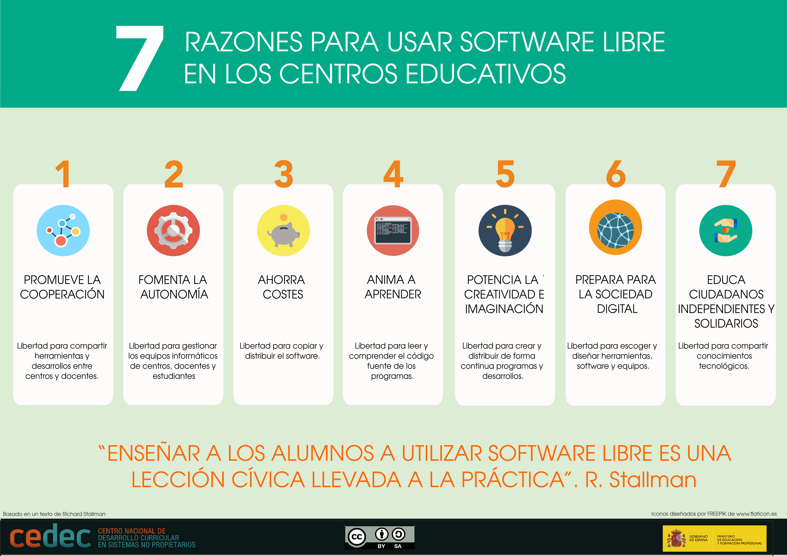

Movimiento del Software Libre
Qué es el software libre
El concepto original fue desarrollado por Richard Stallman, fundador de la Fundación por el software libre (Free Software Foundation, también llamada FSF), programador y, desde los años 80 del siglo pasado, el mayor defensor de los programas libres.
En la web de la FSF encontramos una definición de lo que es el software libre (el resaltado es nuestro):
«Software libre» es el software que respeta la libertad de los usuarios y la comunidad. A grandes rasgos, significa que los usuarios tienen la libertad de ejecutar, copiar, distribuir, estudiar, modificar y mejorar el software. Es decir, el «software libre» es una cuestión de libertad, no de precio.
Free software foundation
Un programa libre es aquel que podemos prestar a nuestros amigos libremente, podemos tener copias en nuestros ordenadores o, si tenemos los conocimientos necesarios, modificarlo para adaptarlo a nuestras necesidades. Esto se concreta en lo que han llamado las cuatro libertades del software. En realidad estas libertades son principios que deben respetar los responsables de la creación, mantenimiento y distribución de los programas. Estos principios afectan a la libertad de los usuarios en cuanto determina lo que pueden hacer o no con ellos. Veamos cuáles son:
Para los usuarios de a pie, que sabemos poco o nada de programación, probablemente nos interesen más las libertades 0 y 2. Con la primera podemos utilizar libremente los programas sin estar sujetos a restricciones como el no poder ejecutar más de una copia del programa, por ejemplo, en ordenadores diferentes, ya sea simultáneamente o no, algo que, salvo raras excepciones, no podemos hacer con los programas que no son libres. Esto, que puede parecer trivial (¿para qué quiero ejecutar dos o más copias de un programa si yo solo puedo trabajar en uno al mismo tiempo?), adquiere una gran importancia en el mundo educativo. Cuando adquirimos un programa para ser usado por el alumnado, lo habitual es tener que comprar múltiples licencias de uso, una por cada ordenador donde vaya a ser instalado o, dependiendo del tipo de programa del que hablemos, por cada escolar que lo vaya a utilizar. Sin embargo, si en clase estamos trabajando con gráficos, por poner un ejemplo, tenemos docenas de programas libres excelentes, como Gimp, que podremos descargar y dar a nuestros alumnos para que lo usen tanto en el centro educativo como en su casa.
Esto último nos lleva a la libertad 2, ya que los programas libres podemos también cederlos a otros para que hagan copias y los utilicen por su cuenta. Lógicamente un centro educativo tiene que tender al uso de este tipo de programas y no solo porque económicamente sea más rentable sino, sobre todo, porque es una de las mejores formas de poner en práctica valores como la solidaridad, gratuidad, compañerismo o altruismo.
Estrategias en la escuela
- Debe fomentarse la programación informática como un medio privilegiado para la interiorización de la importancia software libre ya que se pasa a formar parte de ese conjunto de personas capaces de comprender los programas y, por lo tanto, con capacidad para ejercer la libertad 1. Además, la programación permite y potencia el desarrollo de la lógica y el pensamiento crítico, ambos necesarios para ser personas libres. El pensamiento computacional es una habilidad fundamental para desarrollar una vida plena en la era digital en la que ya vivimos.
- Las libertades 1, 2 y 3 tienen una aplicación directa en la educación, más allá de los programas. Debe fomentarse la ayuda mutua entre el alumnado. Por ejemplo, algo muy sencillo de hacer cuando se mandan trabajos en clase para que hagan de forma autónoma, es permitir que los más rápidos ayuden a aquellos que van más lentos o tengan problemas en su realización, explicándoles que la ayuda no consiste en hacer el trabajo del compañero ni darle las soluciones sino guiarle hacia la consecución de sus objetivos, exactamente como el docente ha hecho previamente con ellos cuando han tenido dificultades.
Este vídeo aclara conceptos relacionados con el software libre y puede ser útil para acabar de comprenderlo.
- ¿Qué es el software libre? Free Software Foundation. https://www.gnu.org/philosophy/free-sw.html
- Software libre. Wikipedia, La enciclopedia libre. https://es.wikipedia.org/w/index.php?title=Software_libre&oldid=120333186.
Formando parte del mundo libre digital
A nivel personal es indudable que la primera ventaja de utilizar los programas libres es el económico. Podemos disfrutar de los programas que queramos, actualizarlos sin restricciones e instalarlos donde queramos de forma totalmente gratuita.
Otro motivo, no menos importante, es el valor de la libertad en sí. Usando programas libres sabemos que pertenecemos a una comunidad donde la ética y la libertad son cruciales. Un mundo más justo pasa necesariamente por conocer y ejercer derechos básicos tales como los citados sin ser considerados únicamente como clientes rentables de ciertas empresas y objeto de mercancía. Este fenómeno es el que encontramos por parte de los grandes monopolios existentes en Internet (Google, Facebook, Amazon, Apple y Microsoft) que nos proporcionan programas gratuitos pero no libres, con la intención de que cedamos nuestros datos para poder estudiarlos y así determinar qué podemos comprar y de qué forma se puede rentabilizar al máximo posible al "cliente-usuario".
El caso es mucho más alarmante si hablamos de educación, ya que se dan todo tipo de facilidades para que los centros educativos adquieran de forma gratuita sus productos. Pensemos en el tremendo impacto que ha tenido en la educación Google for Education donde se ofrecen herramientas y espacio ilimitado para los centros educativos a cambio de la cesión absoluta de los datos de todo lo que hacen nuestros alumnos por Internet con esas cuentas (amigos, mensajes, vídeos vistos, páginas vistas, lugar de conexión, navegador usado, móvil, número de móvil, contactos y un largo etcétera). Algo que se explica de forma muy clara en la política de privacidad de Google for Education, pero que casi todos parecen ignorar o, quizás, desean no conocer.
Además, los programas ofrecidos a escuelas de forma gratuita o a precio reducido provocan la fidelización de las personas a un producto que, cuando abandonen la escuela, dejará de ser gratuito. Esto es una clara falta de ética cuando se realiza con menores de edad.
Para terminar no podemos sino recomendar muy encarecidamente sumarnos a la filosofía de la libertad digital como una opción tomada desde la responsabilidad personal y la razón. A no ser que desarrollemos una actividad muy especializada, con programas propietarios exclusivos, todos los programas de uso habitual existen también en su versión libre, aunque algunos no sean idénticos, sus prestaciones no son inferiores y en más de una ocasión los programas libres son más estables y productivos, ya que su código ha sido examinado por multitud de programadores que detectan errores con más facilidad que los que pueda encontrar una empresa en el que el código sólo puede ser examinado por los empleados.
Podemos resumir los valores que incorpora esta forma de entender el uso de los medios digitales con:
- Libertad personal en el uso y disfrute de los medios. El usuario final es el que decide qué programas va a utilizar y la forma en la que lo hará, no está supeditado a su disponibilidad económica.
- Fomento de la cooperación para elaborar materiales conjuntos entre personas muy distintas. El software libre jamás es un asunto privado sino que intervienen una gran cantidad de personas, ya sea directamente en la programación como en fases posteriores probándolo, dando su opinión, proponiendo mejoras, etc. Algo casi inexistente en el propietario.
- El libre intercambio de materiales digitales favorece la ayuda desinteresada de unos con otros, favoreciendo el intercambio y la búsqueda de soluciones para el entorno en el que cada uno se mueve
- Ofrece mayor seguridad. ya que es examinado y probado por una gran cantidad de personas.
- Se obtiene una reducción en el gasto económico ya que permite seleccionar los programas según las necesidades reales evitando tener que pagar por cada copia instalada.
Estrategias en la escuela
- Los centros educativos deben valorar si las herramientas que, con tanta generosidad proporcionan los grandes en el mundo del consumo, deben formar el núcleo de la educación digital, hasta el punto que toda la actividad del centro gire en torno a una o dos empresas concretas.
- Sin necesidad de rechazar estas ayudas, debe fomentarse el uso equilibrado de las herramientas, decantándose siempre por aquellas formadas por software libre.
La necesidad de usar software libre en las escuelas
La escuela tiene una gran responsabilidad con respecto a los alumnos, ya que la educación en valores es uno de sus cometidos y debe formar ciudadanos preparados para el mundo actual, tanto a nivel intelectual como ético. No sería imaginable un centro educativo donde se hiciesen comprar zapatillas deportivas marca Dior o mochilas escolares Balenciaga. El mercado de las deportivas y las mochilas es lo suficientemente amplio como para que sea el propio escolar o sus padres los que elijan aquellas que mejor se adapten a sus necesidades y economía. Sin embargo esto es lo que se hace con el material digital, lo que podríamos llamar "las zapatillas y mochilas de bits". Se utilizan programas y sistemas operativos propietarios que muchas veces se dejan a buen precio para el mundo escolar, cuando no se regala directamente. Todo ello para poder crear el futuro mercado del que se nutrirán económicamente numerosas empresas, cuando estos alumnos pasen a ser hombres y mujeres trabajadores, entrenados con un determinado tipo de software durante sus años escolares.
Es, por lo tanto, necesario que los centros educativos replanteen el tipo de software que están proporcionando a sus alumnos para promover un uso ético y sostenible de los medios digitales.
En el artículo Por qué las escuelas deben usar exclusivamente software libre, podemos leer:
Enseñando el software libre, las escuelas pueden formar ciudadanos preparados para vivir en una sociedad digital libre. Esto ayudará a que la sociedad entera se libere del dominio de las megacorporaciones. Enseñar el uso de un programa que no es libre equivale, por el contrario, a inculcar la dependencia, lo cual se opone a la misión social de las escuelas. Las escuelas no deben hacerlo, nunca.
Richard Stallman
CEDEC. 7 Razones para usar software libre en los centros educativos (CC BY-SA)
Los centros educativos deben velar por la ética de su propia conducta:
- Valorar si desean formar a los alumnos en el consumo acrítico de productos propietarios o en la racionalidad del consumo responsable de productos digitales con un origen y destino basados en la ética.
- Decidir si se desea educar en valores solidarios como la cooperación que lleva implícito el software libre, así como la filosofía de trabajo que implica crear desinteresadamente para que otros puedan utilizar lo que hemos construido.
- Determinar si se prepara al alumnado para una ciudadanía digital que conlleva responsabilidades en cuanto al comportamiento en Internet, con la cultura del software libre se predispone de conductas más acordes con la filosofía del intercambio global que supone la Red.
Cada docente puede buscar aquellos programas o sistemas que utilizará en su clase, pero si queremos que esto forme parte de la identidad educativa de nuestro centro serán los equipos directivos los que deban tomar las decisiones para que todo esto sea posible, ya que ellos son los que pueden determinar las líneas generales en el uso de los medios digitales.
Estrategias en la escuela
- En los centros educativos deben revisarse los programas que se están utilizando en la actualidad para determinar si existen alternativas libres a los mismos. Igualmente con los nuevos programas que se empiecen a utilizar deberían buscarse siempre sus equivalentes en programas libres.
- Cuando se enseñen habilidades digitales básicas, como escribir en procesador de textos, crear presentaciones, etc., debe siempre ampliarse el marco de enseñanza para que el alumnado pueda ver diferentes tipos de programas de cada uno: tanto de sistemas propietarios como de los libres, pero jamás limitarse exclusivamente a un único tipo ya que los niños deben salir preparados para el mundo actual.
- La educación integral implica que el alumnado debe conocer el amplio espectro de software actual, pero con una clara preferencia por el libre, tanto a nivel teórico como práctico.
¿Y entonces qué usar?
- Explora el listado de recursos recopilados en el sitio Herramientas y Servicios TIC Abiertos Para Educación.
- Elige algún software que te llame la atención y revisa la información provista.
- Accede a la web oficial de dicho software y explora la documentación. Intenta instalarlo o utilizarlo en línea. Experimenta sin miedo todas las funcionalidades que vayas descubriendo.
- Prepara una presentación donde muestres a tus compañeras todo lo que has descubierto.
Obra publicada con Licencia Creative Commons Reconocimiento Compartir igual 4.0